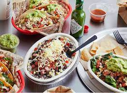
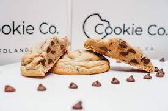
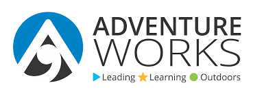

Data from Hollywood and other industries, up until 2022. The Movie Data Analysis Project is a captivating exploration of the film industry through data-driven insights. This project brings together a team of movie enthusiasts and data analysts who analyze a vast dataset encompassing movie releases, box office performance, genre trends, audience demographics, and critical reviews.
>

Chipotle costumer analysis since 2017. Ultimately, the project's deliverables include actionable recommendations, insightful visualizations, and customer-centric strategies to elevate Chipotle's competitive edge in the highly competitive fast-casual dining market. By placing data-driven decisions at the core of their operations, Chipotle can continuously enhance customer satisfaction, loyalty, and overall profitability.
The project team compiles and analyzes a vast dataset of retail orders, including transaction details, customer demographics, product categories, and geographical locations. Through sophisticated data analytics, they identify key customer segments, popular products, and sales patterns across different time periods.
Analysis of Data Professionals and their working expirences. Using advanced data analysis tools and algorithms, the team dives deep into the data, uncovering patterns, trends, and correlations that unlock hidden opportunities and potential risks. Their expertise enables them to present complex findings in a clear and concise manner, making it accessible to both technical and non-technical stakeholders.

Finanial Report for Kevin Cookie Company for 2019. The Kevin Cookies Financial Report project culminates in the delivery of a professionally presented report, complete with graphs, charts, and key performance indicators. This valuable document equips Kevin with valuable financial intelligence, empowering him to optimize operations, identify opportunities for efficiency, and bolster his bakery's financial success.

The Adventure Works Project is an exciting and innovative venture aimed at developing cutting-edge virtual reality (VR) technology for adventure enthusiasts. The project's primary objective is to create an immersive and realistic VR experience that allows users to embark on thrilling virtual adventures, such as mountaineering, scuba diving, jungle exploration, and more, all from the comfort of their homes.